| < | > |
| Matsumoto rambles | [2004-10-23 22:38] |
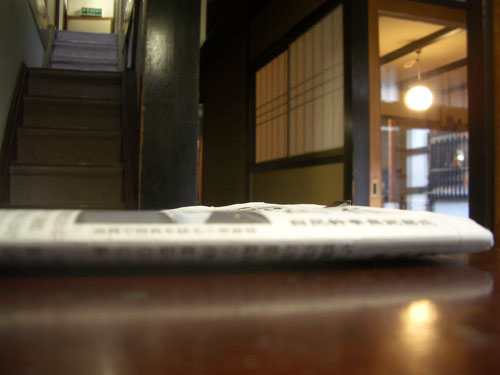 We had decided to stay another night at the Marumo. It was tiny, comfortable and quiet. We would wander about Matsumoto, visit the museum, maybe take a bus up into the mountains, and go to the onsen again. I forgot to mention yesterday that before our dinner failure, we had been up to to the local hot spring, Asama Onsen. That was a friendly experience. The boiler for the hot showers was broken, but a cheerful old granddad soon showed us how to adapt. I love these asexual places where you can study what time does to bodies. "Oh, that's just what Yuichi will look like when he's 90." 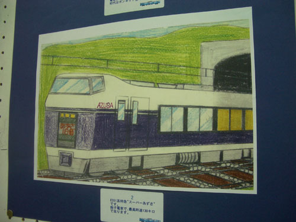 First stop was the Post Office to change traveler's cheques. João had taken them in his name, so while he was dealing with that I hung around. This was the train we'd traveled on yesterday. Next stop, Muji, where I bought some nice long sleeved T-shirt things – with a breast pocket – I love a handy left-side breast pocket. So hard to find these days. The silent giant who guarded the Marumo at night had told us of a vegetarian resturant. We went by to have a look. We prowled around like two blind foxes outside a chicken coop. Was this it? Was it next door? Eventually I remembered that there is no point in being 50 and timid and headed straight through the door. Suddenly we had made a booking for 8:30 that evening. Oh and there's that fox again. Always happy to make an exhibition of himself. 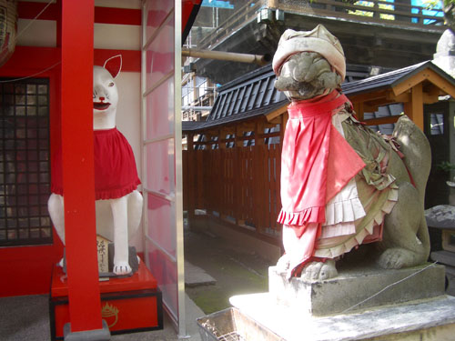 Which is sort of what we found when we got to the Matsumoto City Museum of Art. The dot woman, Yayoi Kusama, was a local girl. She seemed like a look-at-me machine. More interesting were some chic bits of calligraphy by one Shinzan Kamijo. All in all disappointing. Maybe most interesting were the motionless female attendants who sat with their legs wrapped in blankets in empty airconditioned rooms. I could imagine these local girls cycling off to work each day knowing what was ahead of them, but proud with that particular perverse Japanese satisfaction. We ended up in the empty cafe playing with the sugar. 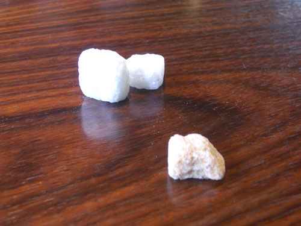 Much more interesting was the tiny Museum of Measuring Instruments. A kindly old man sort of wakened himself and guided us round demonstrating how things worked and occasionally crossing the language barrier. 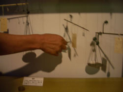 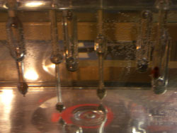 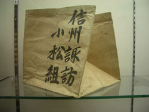 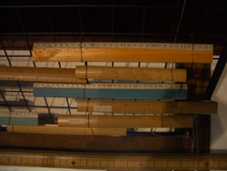 This was just round the corner from the Marumo, so we stopped off for a rest. On the way up the stairs I took this as an example of wabi. Many years of what Yuichi called "the human oil" had made this handrail a friend and associate of humanity. 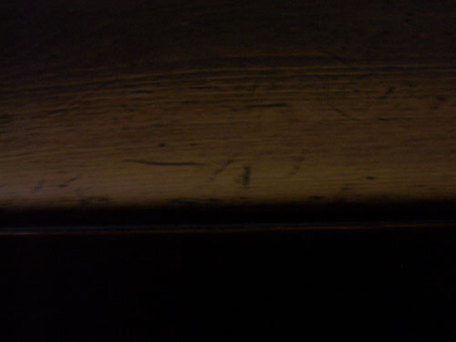 It was early yet, we still had time to go and try the other onsen. Whereas yesterday's had been like the neighbourhood bathhouse, this one was more stylish. In fact at first it seemed like it must be attached to some fine hotel, but it wasn't. It was like a good restaurant that served only water. It existed because people could appreciate it – like the supermarket we had visited with Yuichi. Heaven had decide to smile on us this evening. The place was almost empty. We relaxed and enjoyed the amenities. There was a nice wooden bath outside. The sky was twilight blue. I was watching a shimmering ribbon fall through its curve into the water when João came to announce the arrival of the junior soccer team – or whatever they were. I couldn't have decorated the situation better. 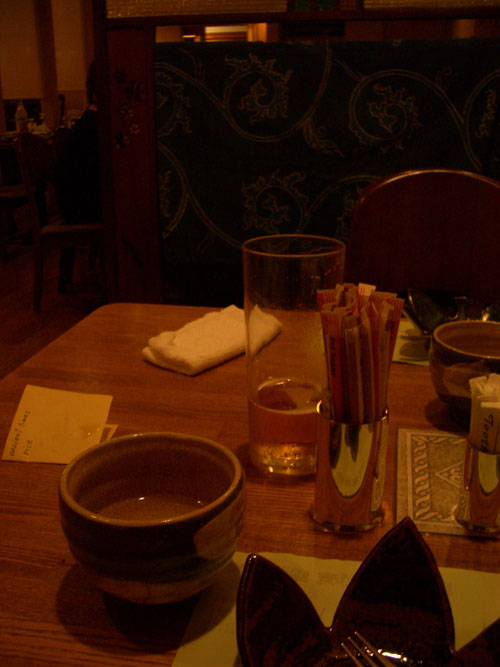 We arrived at the restaurant a bit late but were obviously well anticipated. Inside was one long raucous table, obviously an office party, but behind a screen our places were set. Heaven continued to smile. Cutting us short as we tried to explain what we wanted to eat, the waitress disappeared. Reappearing with a delicate combination of peeled fig with slices of Asian pear. Everything came with a little note which they translated in the kitchen using one of those little pocket translators. João went to the kitchen in the end and got the whole menu – I'll pester him for it tomorrow. 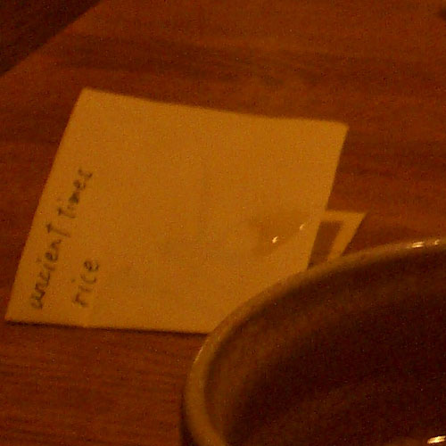 |
|